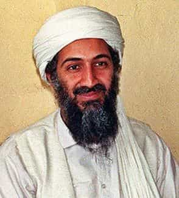

For decades, the West has been plagued by Radical Islamic Terrorism. From the bombing of the US embassy in Lebanon in 1983, to the more recent Charlie Hebdo attacks, Orlando Night Club shooting, and Manchester Arena Bombing, there is no doubt of a connection between radical Islam and terrorism. Is this some problem inherent to Islam, or is this a more recent development with a discrete cause?
Timeline of radical Islamic terrorism
The Wikipedia article on Islamic terrorist attacks lists the earliest example as the seizure of the Grand Mosque in Mecca in 1979, followed by a sprinkling of attacks through the 1980s. During the 1990s, the intensity of Islamic terrorist attacks picks up, finally becoming commonplace by the 2000s.
The web site “The Religion of Peace” has a more exhaustive archive going back to 2001, demonstrating conclusively that Islamic terrorist activity has dramatically intensified in recent years. Islam has been around for centuries, including numerous wars against Western Crusaders, and there have been isolated acts of terrorism at times. Yet intense terrorism of this kind against the West is clearly a recent phenomenon. What caused it?
The Muslim Brotherhood
The Muslim Brotherhood was founded in Egypt in 1928 by Hassan al-Banna. The Brotherhood was a Sunni Islamist, pro-Sharia movement that also opposed Western imperialism. Their anti-imperialist stand led them to oppose British involvement in Egypt as well as calling for Jihad against Jewish Zionists in the Arab revolt in Palestine that lasted from 1936-1939.
The British Empire realized that the Brotherhood was a threat to their domination of Egypt, so they decided to co-opt the movement for their own purposes. British officials met with leadership of the movement in 1941, and by 1942 they were providing funding to the group. The leadership of the Brotherhood often met with British spies, who provided the group with information (and occasional disinformation) and support in their efforts.
For the next few decades, the Brotherhood functioned as a conservative, Islamist counterweight to any populist, secular movements that emerged. They supported a 1952 military coup, were involved in assassinations, and were themselves subjected to assassinations, violence, and infiltration. The Muslim Brotherhood slowly spread to other countries in the region, and function as a means of maintaining a strategy of tension in the region (secular nationalists vs. traditional Islamists) that caused people to ignore the influence of Western intelligence on their nations. Radicalization is seen as the price to pay for maintaining Western hegemony.
Zbigniew Brzezinski and the Mujahideen
In 1978, Communists under the leadership of Nur Muhammad Taraki took over the government of Afghanistan. Soon afterwards, they signed a treaty of friendship with the USSR, implemented secular education and land redistribution, and began widespread political oppression and murder of opponents, including devout Muslims. The religious factions under the leadership of Hafizullah Amin formed a militia called the Mujahideen and overthrew the Taraki government. In response, the Soviets invaded Afghanistan and installed a government favorable to Moscow.
Jimmy Carter’s National Security Advisor Zbigniew Brzezinski saw this as an opportunity to hand the Soviets their own Vietnam quagmire, and agitated for intervention. The United States began offering non-lethal aid to the Mujahideen rebels through the CIA. Under Reagan, this cascaded into tens of millions of dollars per year in aid to the Mujahideen, small arms, including the tactically-decisive Stinger antiaircraft missiles, training, and intelligence. The Mujahideen’s ally Pakistan was an even larger recipient of aid, with an estimated $20 billion sent to Pakistan over the course of the war.
Blowback

After a terrible 10 year war and widespread destruction of Afghanistan, the Soviets withdrew. The Mujahideen were successful, but the damage was already done. In addition to arming and training the rebels, the West had actively encouraged radicalism, seeing it as a way to unite the people against the godless Soviets. British Prime Minister Margaret Thatcher spoke to the Mujahideen in 1981, telling them “The hearts of the free world are with you.” In an infamous video, Zbigniew Brzezinski told the Mujahideen “Your cause is right, and God is on your side.”
These radicalized Muslims went on to found and support terrorist groups like Al Qaeda, ISIS, Boko Haram, al Shabaab, and many others. Once the ideology and tactics of Radical Islam were created and encouraged, it spread like wildfire throughout the world, with dozens of such groups now in existence.
There are valid arguments that Islam itself does encourage some of this behavior by endorsing Jihad and dishonesty to non-Muslims, but history shows that the relatively high prevalence of radical Islam is a recent phenomenon. During the Islamic Golden Age, Muslims lived in peace with other religions, and their cities were centers of science and progress.
While the Islamic Crusaders under Saladin were courageous warriors with an honor code, modern Islamic terrorists are cowards that target women and children, convinced that God requires them to kill all infidels. One-hundred years ago, most Muslim nations were more tolerant than they are today, and terrorism was a rarely-used tactic.
Globalism
The British have been operating a worldwide, globalist empire for centuries. Zbigniew Brzezinski is also a notorious globalist, who wrote a book in 1997 describing the world as a Grand Chessboard, describing his strategy for manipulating nations like chess pieces to maintain hegemony of Western power. In a 1998 interview he expressed no regret at creating radical Islam. He actually bragged about it:
A: Regret what? That secret operation was an excellent idea. It had the effect of drawing the Russians into the Afghan trap and you want me to regret it? The day that the Soviets officially crossed the border, I wrote to President Carter: We now have the opportunity of giving to the USSR its Vietnam war. Indeed, for almost 10 years, Moscow had to carry on a war unsupportable by the government, a conflict that brought about the demoralization and finally the breakup of the Soviet empire.
Q: And neither do you regret having supported the Islamic [integrisme], having given arms and advice to future terrorists?
Brzezinski: What is most important to the history of the world? The Taliban or the collapse of the Soviet empire? Some stirred-up Moslems or the liberation of Central Europe and the end of the cold war?”
Conclusion
Radical Islamic Terrorism is a synthetic creation of Western intelligence. Although Islam is not without flaws, there can be no doubt that intense, widespread Islamic terrorism can be traced to Western intervention in Egypt, Afghanistan, and elsewhere. Globalist meddlers like Brzezinski and the British Empire always fail to anticipate blowback effects, because they fundamentally fail to appreciate the wisdom of the historical American concept of noninterventionism. They believe they can play God (Allah) and not face the consequences.
Read Next: The Newfound Alliance Between Feminism, Marxism, And Radical Islam